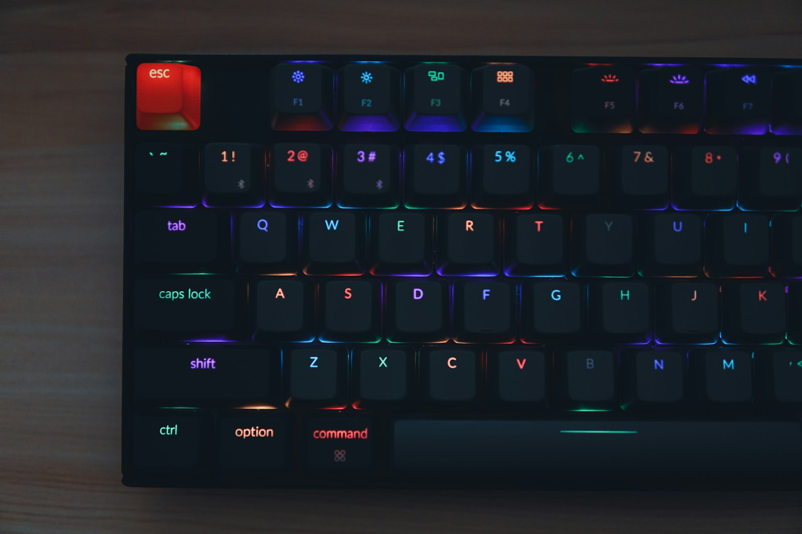

按鍵配置建議
保留 CS 的肌肉記憶，只改真正會害你送頭的那幾個鍵。

CS 玩家最容易踩到的雷
| 按鍵 | 在 CS | 在三角洲（預設） | 會發生什麼事 |
|---|---|---|---|
| Shift | 靜步 | 衝刺（開鏡時是屏息） | 想安靜摸過去，結果大聲跑出去 ⚠️ |
| B | 購買選單 | 切換射擊模式 | 不小心把全自動切成單發 |
| Tab | 計分板 | 背包／計分板 | 烽火地帶打開背包時看不到前方 |
| Q | 快速切槍 | 左側身 | 想切槍卻探頭出去 |
| E | 使用／拆包 | 右側身（互動是 F） | 想開門卻探頭出去 |
最重要的是 Shift。三角洲的靜步預設在 Caps Lock。建議保留 Shift = 衝刺（三角洲地圖大，衝刺很常用），然後刻意改掉「按 Shift 求安靜」的習慣；真的改不掉，就把靜步改到 Shift、衝刺改到別的鍵。
PC 預設按鍵一覽
| 類別 | 動作 | 預設按鍵 |
|---|---|---|
| 移動 | 前／後／左／右 | W S A D |
| 移動 | 衝刺 | Shift |
| 移動 | 靜步 | Caps Lock |
| 移動 | 跳躍／攀爬／翻越 | Space |
| 姿勢 | 蹲下（切換）／蹲下（按住） | C ／ Ctrl |
| 姿勢 | 趴下 | Z |
| 姿勢 | 左側身／右側身 | Q ／ E |
| 射擊 | 開火／開鏡 | 滑鼠左鍵／滑鼠右鍵 |
| 射擊 | 換彈 | R |
| 射擊 | 切換射擊模式 | B |
| 射擊 | 屏息 | Shift（開鏡時） |
| 射擊 | 架腳架 | J |
| 武器 | 主武器 1／主武器 2 | 1 ／ 2 |
| 武器 | 近戰 | 3 |
| 武器 | 上一把／下一把 | 滾輪上／下 |
| 道具 | 戰術裝備 | X |
| 道具 | 兵種技能 1／技能 2 | V ／ G |
| 道具 | 戰術裝置 | Y |
| 互動 | 互動／救人／處決 | F |
| 互動 | 其他互動／扛起／放下 | H |
| 資訊 | 地圖 | M |
| 資訊 | 背包／計分板 | Tab |
| 溝通 | 標記 | 滑鼠中鍵 |
| 溝通 | 按住說話 | T |
按鍵資料整理自攻略網站，改版後可能有變動。手雷、治療等按鍵各來源不一致，請進遊戲「設定 → 按鍵」確認。
給 CS 老玩家的配置建議
1. 不用改的（跟 CS 一樣或很接近）
- Ctrl 按住蹲：跟 CS 一樣，保留。
- 3 近戰：跟 CS 的刀一樣，保留。
- 1 ／ 2 切槍、R 換彈：保留。
2. 建議調整的
- 開鏡改成「按住」：放開右鍵就收鏡，比較像 CS 的節奏，探頭打完馬上縮回來。
- 側身綁到滑鼠側鍵：Q/E 會佔用移動的手指；綁到側鍵，就能邊 A/D 移動邊側身。
- 按住說話改到滑鼠側鍵或用 Discord：跟孩子溝通要快，T 離 WASD 有點遠。
- 標記（中鍵）多用：看到敵人就按，比喊「左邊二樓」更快更準。
- 趴下 Z 保留，但記得 CS 沒有趴下，一開始刻意練習在被打時趴下找掩護。
- 架腳架 J 太遠：常用機槍的話，改到 Z 附近或側鍵。
3. 其他設定
- 衝刺用「按住」，避免切換式在轉角忘記關掉。
- 滑鏟：衝刺中按蹲，可以練習用來快速過空曠處。
- 兵種技能 V/G、戰術裝備 X 離 WASD 很近，通常不用改。
結論
大部分預設按鍵直接用就好。真正要處理的只有三件事：Shift 是衝刺不是靜步、側身綁到順手的位置、開鏡改成按住。改完在訓練場練 10 分鐘，再上線跟孩子一起打。